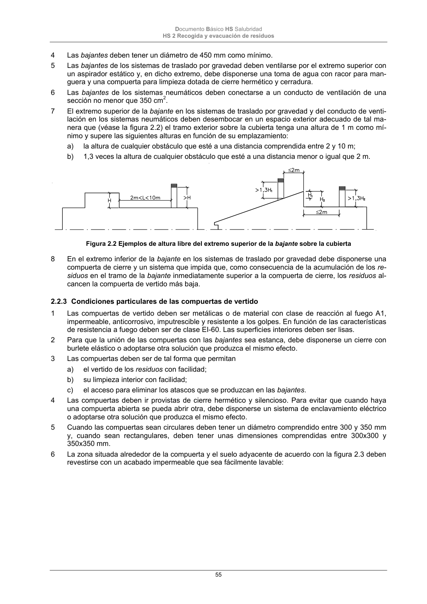

DB-HS · Fragmento de PDF p55 · versión 2022-06-14 · capa oficial
Formatos: JSON compacto · Markdown · PDF fuente
Ámbito del documento · texto del ámbito · documento y tablas
ID técnico a0131 · PDF pág. 55 · jerarquía no validada por persona · no es capítulo: sin_linea_de_encabezado · padre: raíz · literal original en el contenido: «sección no menor que 350 cm2.»
sección no menor que 350 cm2. 7 El extremo superior de la bajante en los sistemas de traslado por gravedad y del conducto de venti- lación en los sistemas neumáticos deben desembocar en un espacio exterior adecuado de tal ma- nera que (véase la figura 2.2) el tramo exterior sobre la cubierta tenga una altura de 1 m como mí- nimo y supere las siguientes alturas en función de su emplazamiento: a) la altura de cualquier obstáculo que esté a una distancia comprendida entre 2 y 10 m; b) 1,3 veces la altura de cualquier obstáculo que esté a una distancia menor o igual que 2 m. Figura 2.2 Ejemplos de altura libre del extremo superior de la bajante sobre la cubierta 8 En el extremo inferior de la bajante en los sistemas de traslado por gravedad debe disponerse una compuerta de cierre y un sistema que impida que, como consecuencia de la acumulación de los re- siduos en el tramo de la bajante inmediatamente superior a la compuerta de cierre, los residuos al- cancen la compuerta de vertido más baja.

PDF fuente redistribuible: copia fiel enlazada en esta página (SHA256 verificado).